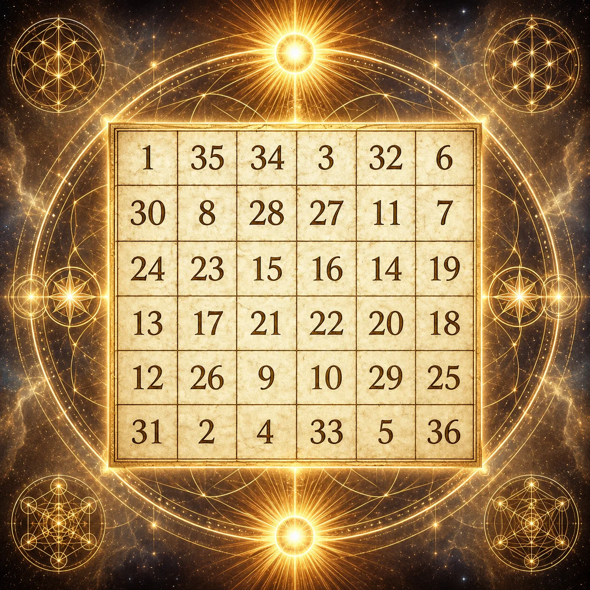

I / THE SUM
1 + 2 + ⋯ + 36 = 666
The total is a property of the integers one through thirty-six. It requires no hidden assumption.
Thirty-six numbers. Fourteen equal lines. One invariant.
Explore the classical solar magic square through pattern, proof, and light.
Use arrow keys to move between cells, then Enter or Space to select the number.
Select a number to illuminate its row and column. Explore every line, complementary pair, or the full numerical journey.
The total is a property of the integers one through thirty-six. It requires no hidden assumption.
The six equally balanced rows each sum to 111. The columns and both main diagonals do too.
Each number has an arithmetic complement within the range 1–36. Select Complements to find it.
This arrangement is a left-to-right reflection of the solar square recorded in Western Renaissance planetary-square traditions, including Cornelius Agrippa’s Three Books of Occult Philosophy, Book II, Chapter 22.
The Sun association is historical symbolism. The numerical relationships above are mathematical facts. Neither establishes supernatural effects or a concealed physical force.
Reference: Solar square and historical source ↗
